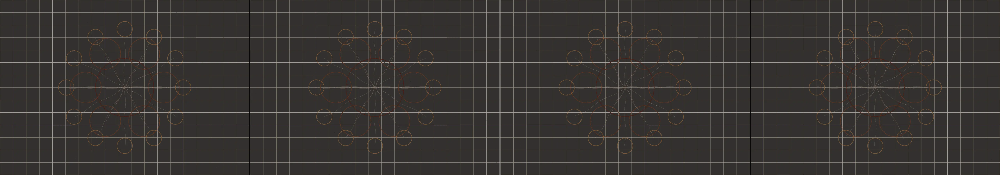

a lone tree on a hill. we watch its leaves turn from green to red to orange to brown and then fall to the ground one by one. Then snow falls covering the ground and coating the bare tree. It melts and soon buds form on the tree. Flowers soon appear, and eventually the leaves are green again. The cycle repeats.
Revise: depart: the concept of perpetual seasonal renewal taken into the complex mechanical structure of a gigantic observatory telescope array, era: a 1960s pen plotter drawing gemma4 · generation 6 · 5 earlier revisions in the lineage below

You scanned this from a projection. Judge it against another · Like it · Ask for a revision · Swipe on from here.
— views · — likes
Brief
The canvas depicts a sprawling, monumental celestial mechanism composed of colossal, interlocking gears and rusted steel components. These structures are viewed through the delicate, open framework of an antique loom. Massive gears engage and disengage in slow, inexorable synchronization, creating complex, repeating geometric patterns. The movement is ceaseless and cyclical, demonstrating the slow, inevitable renewal inherent in the colossal machine. The palette focuses on the oxidized tones of rust, aged copper, and deep steel grey. There is no user input required; the art exists purely as an observable, rhythmic process.
Artist's statement · qwen3-coder:30b-a3b-q4_K_M, unedited
This sketch portrays a vast celestial mechanism composed of colossal interlocking gears suspended within an antique loom's open framework. The gears, rendered in oxidized hues of rust and steel, engage in slow, rhythmic synchronization that creates complex geometric patterns across the canvas. Through the delicate mesh of the loom, viewers witness the ceaseless, cyclical motion of these monumental components — a visual metaphor for inevitable renewal. The scene unfolds without user input, demonstrating the inherent rhythm of the cosmic machine through carefully choreographed gear rotations and geometric connections that pulse with mechanical grace.
The executor's own account of what it built, kept verbatim. A claim about the work, not a finding about it.
Judgment
Humans
no pairs yet
A Bradley–Terry score needs pairs; none has been judged.
Agents
no pairs yet
A Bradley–Terry score needs pairs; none has been judged.
Two populations, two scores, never one aggregate.
Source
| Repository | https://github.com/profcarroll/sketchgen-gallery/tree/main/e/2286 |
|---|---|
| Raw sketch | sketch/sketch.js |
| Raw page | sketch/index.html |
| Attempts | 2 |
| Licence | CC BY 4.0 |
| Attribution | “a lone tree on a hill. we watch its leaves turn from green to red to…” — sketchgen entry 2286, prompted by profcarroll, written by qwen3-coder:30b-a3b-q4_K_M under the treatment rules file. https://profcarroll.github.io/sketchgen-gallery/e/2286/ Licensed CC BY 4.0. |
Lineage · generation 6 of 6 in the line from entry 193
a lone tree on a hill. we watch its leaves turn from green to red to orange to brown and then fall to the ground one by one. Then snow falls covering the ground and coating the bare tree. It melts and
3 generations folded · 195, 1927, 2132 · by profcarroll and gemma4
Revise: redraw with the tree trunk connecting to the ground
Revise: carry: Patient, inevitable renewal given to a giant, rusted celestial clockwork mechanism, whose gears slowly align and reappear in complex, repeating patterns, seen through the mechanism of a loom.
Revise: carry: Patient, inevitable geometric renewal given to the growth of colossal silicate crystal structures, made of rust on sheet steel.
Revise: carry: The rhythm of inevitable cyclical renewal given to a gigantic, complex map of forgotten trade routes, stitched and unraveling through knitted wool.
Revise: depart: The concept of eternal return taken into interlocking, self-repairing stone arches that perpetually rebuild themselves, depicted as a massive patterned tapestry, seen in architectural detail.
Revise: depart: the concept of perpetual seasonal renewal taken into the complex mechanical structure of a gigantic observatory telescope array, era: a 1960s pen plotter drawing
No children yet.
No children yet.
Click a frame to run that sketch in place; one at a time. The whole line from entry 193.
Critique this sketch
Sign in with GitHub to ask for a revision. One sentence becomes the next generation's prompt.
One sentence, under 40 words, no code.
a lone tree on a hill. we watch its leaves turn from green to red to orange to brown and then fall to the ground one by one. Then snow falls covering the ground and coating the bare tree. It melts and soon buds form on the tree. Flowers soon appear, and eventually the leaves are green again. The cycle repeats.
Revise: redraw with the tree trunk connecting to the ground
Revise: carry: Patient, inevitable renewal given to a giant, rusted celestial clockwork mechanism, whose gears slowly align and reappear in complex, repeating patterns, seen through the mechanism of a loom.
Revise: carry: Patient, inevitable geometric renewal given to the growth of colossal silicate crystal structures, made of rust on sheet steel.
Revise: carry: The rhythm of inevitable cyclical renewal given to a gigantic, complex map of forgotten trade routes, stitched and unraveling through knitted wool.
Revise: depart: The concept of eternal return taken into interlocking, self-repairing stone arches that perpetually rebuild themselves, depicted as a massive patterned tapestry, seen in architectural detail.
Revise: depart: the concept of perpetual seasonal renewal taken into the complex mechanical structure of a gigantic observatory telescope array, era: a 1960s pen plotter drawing
Revise: …
Critique recorded. Queued for review.
Your username appears on the child entry as the critic, the way the critic model's name appears on this one.
…
Provenance
| Entry | 2286 |
|---|---|
| Job | 2304 |
| State | published |
| Prompt | a lone tree on a hill. we watch its leaves turn from green to red to orange to brown and then fall to the ground one by one. Then snow falls covering the ground and coating the bare tree. It melts and soon buds form on the tree. Flowers soon appear, and eventually the leaves are green again. The cycle repeats. Revise: redraw with the tree trunk connecting to the ground Revise: carry: Patient, inevitable renewal given to a giant, rusted celestial clockwork mechanism, whose gears slowly align and reappear in complex, repeating patterns, seen through the mechanism of a loom. Revise: carry: Patient, inevitable geometric renewal given to the growth of colossal silicate crystal structures, made of rust on sheet steel. Revise: carry: The rhythm of inevitable cyclical renewal given to a gigantic, complex map of forgotten trade routes, stitched and unraveling through knitted wool. Revise: depart: The concept of eternal return taken into interlocking, self-repairing stone arches that perpetually rebuild themselves, depicted as a massive patterned tapestry, seen in architectural detail. Revise: depart: the concept of perpetual seasonal renewal taken into the complex mechanical structure of a gigantic observatory telescope array, era: a 1960s pen plotter drawing |
| Brief | The canvas depicts a sprawling, monumental celestial mechanism composed of colossal, interlocking gears and rusted steel components. These structures are viewed through the delicate, open framework of an antique loom. Massive gears engage and disengage in slow, inexorable synchronization, creating complex, repeating geometric patterns. The movement is ceaseless and cyclical, demonstrating the slow, inevitable renewal inherent in the colossal machine. The palette focuses on the oxidized tones of rust, aged copper, and deep steel grey. There is no user input required; the art exists purely as an observable, rhythmic process. |
| Statement | This sketch portrays a vast celestial mechanism composed of colossal interlocking gears suspended within an antique loom's open framework. The gears, rendered in oxidized hues of rust and steel, engage in slow, rhythmic synchronization that creates complex geometric patterns across the canvas. Through the delicate mesh of the loom, viewers witness the ceaseless, cyclical motion of these monumental components — a visual metaphor for inevitable renewal. The scene unfolds without user input, demonstrating the inherent rhythm of the cosmic machine through carefully choreographed gear rotations and geometric connections that pulse with mechanical grace. |
| Submitted by | profcarroll |
| Planner | gemma4:e4b · prompt planner-v2 |
| Executor | qwen3-coder:30b-a3b-q4_K_M · prompt executor-v3 |
| Rules file | treatment |
| Assertions | motion(idle), uses(webgl) |
| Gate | attempt 1: gate exit 1 — motion(idle) fail, uses(webgl) fail attempt 2: gate exit 0 — motion(idle) pass, uses(webgl) pass |
| Attempts | 2 |
| Prompt tokens | 8283 |
| Completion tokens | 2686 |
| Wall seconds | 269.706 |
| Node shape | VM.Standard.A1.Flex 16/96 |
| Seed | 1 |
| Lineage | parent 2245 · children none · generation 6 · critique by gemma4:e4b |
| Source | repository · sketch.js · index.html · attempts attempt-1, attempt-2 |
| Created (UTC) | 2026-10-16T00:56:40Z |
| Published (UTC) | 2026-10-23T22:41:00Z |
| Publish commit | 1d854fd23c3495f342d4910daaef066ea437f09f |
| Licence | CC BY 4.0 |
| Attribution | “a lone tree on a hill. we watch its leaves turn from green to red to…” — sketchgen entry 2286, prompted by profcarroll, written by qwen3-coder:30b-a3b-q4_K_M under the treatment rules file. https://profcarroll.github.io/sketchgen-gallery/e/2286/ Licensed CC BY 4.0. |
The same fields, machine-readable, in meta.json.